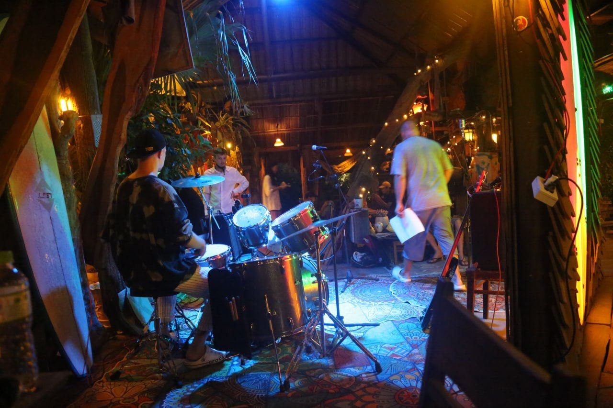
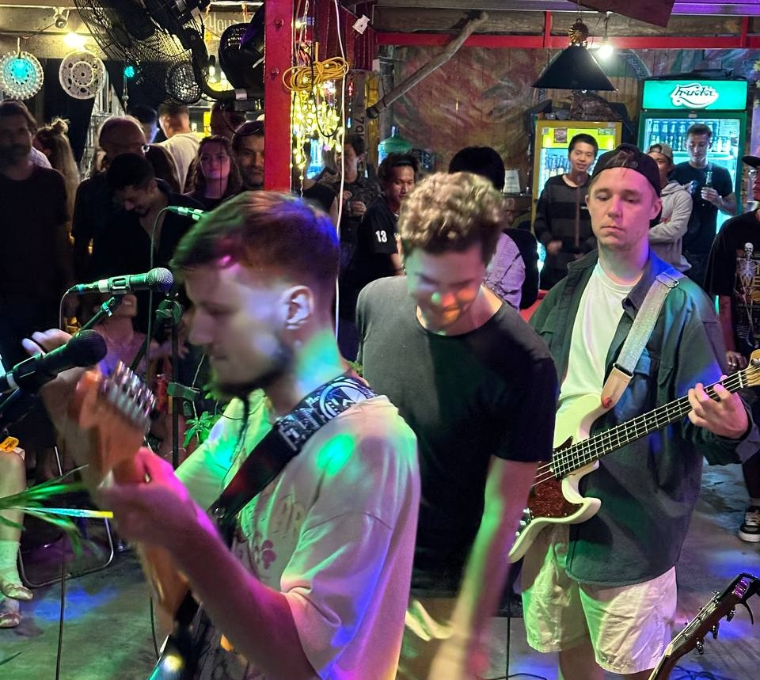

Social Jam by kultura.production
Social Jam của kultura.production là một dạng sự kiện mới sẽ cuốn hút khán giả yêu thích văn hóa đương đại của Đà Nẵng. Sự kiện này sẽ làm nổi bật vị thế của [venue_name] và nâng tầm địa điểm lên một đẳng cấp mới.
Social Jam là một buổi biểu diễn ngẫu hứng với sự tham gia của ban nhạc chính và các nhạc công khách mời, kết hợp với các yếu tố tương tác cho khách của địa điểm. Buổi biểu diễn bao gồm cả những màn ngẫu hứng tự phát và chuẩn bị trước bởi những nhạc công hàng đầu tại Đà Nẵng hoặc đang đi qua nơi này. Sự tinh tế và kinh nghiệm lâu năm của các thành viên trong ban nhạc chính đảm bảo sự đa dạng về thể loại và bầu không khí hấp dẫn cho khán giả.
Social Jam sẽ thu hút một lượng khán giả tìm kiếm các sự kiện văn hóa mới mẻ và hấp dẫn trong thành phố. Mặc dù các buổi jam và open mic ở Đà Nẵng và Hội An mang lại những trải nghiệm tuyệt vời, Social Jam nổi bật với các yếu tố tương tác độc đáo và cơ hội thể hiện sự sáng tạo. Những yếu tố này khuyến khích khách ở lại lâu hơn, tận hưởng và hoàn toàn đắm chìm vào trải nghiệm.
Khách tham dự Jam trở thành những người tham gia đầy đủ trong buổi biểu diễn. Mọi người đều có thể lên sân khấu chơi nhạc cụ, hát hoặc nhảy. Việc tham gia được khuyến khích bằng các phần thưởng từ địa điểm và sự cổ vũ của khán giả, giúp mọi người có cơ hội cảm thấy mình như một ngôi sao. Những khách thích ở lại bàn của mình sẽ được phát các nhạc cụ nhỏ (như trống lắc, kèn kazoo, v.v.) trong suốt buổi biểu diễn, giúp họ tham gia vào sự kiện.
Những màn biểu diễn xuất sắc nhất sẽ được ghi lại bằng video, mang lại những kỷ niệm lâu dài cho những người biểu diễn và được sử dụng cho mục đích tiếp thị, khuyến khích các khách mời khác quay lại [venue_name].
Nhóm nhạc kultura.production đã hoạt động thành công tại Đà Nẵng trong một năm qua, xây dựng được danh tiếng tốt cả về mặt sáng tạo lẫn chuyên môn. Chúng tôi có đầy đủ thiết bị âm thanh cần thiết, điều chỉnh âm thanh chuyên nghiệp và biết cách tạo ra một bữa tiệc đáng nhớ sẽ để lại ấn tượng sâu sắc cho khách của bạn và tăng chi tiêu trung bình.

Social Jam by kultura.production
Social Jam by kultura.production is a new event format that will captivate audiences who are passionate about Da Nang's contemporary culture. It will highlight [venue_name]'s status and elevate it to a new level.
Social Jam is an improvisational performance featuring a house band and guest musicians, with interactive elements for the venue's guests. The performance is based on both spontaneous and prepared improvisations by some of the best musicians in Da Nang or those passing through. The taste and extensive experience of the house band members ensure a variety of genres and an atmosphere appealing to the audience.
Social Jam will attract an audience seeking fresh and engaging cultural events in the city. While jams and open mics in Da Nang and Hoi An offer great experiences, Social Jam distinguishes itself with unique interactive elements and creative expression opportunities. These features encourage guests to stay longer, enjoy themselves, and fully immerse in the experience.
Guests of the Jam become full participants in the performance. Everyone can take the stage to play an instrument, sing, or dance. Participation is encouraged with prizes from the venue and applause from the audience, giving everyone a chance to feel like a star. Those who prefer to stay at their tables receive small instruments (such as percussion, kazoos, etc.) during the performance, allowing them to engage in the event.

The best performances are recorded on video, providing lasting memories for the performers and being used for marketing purposes, motivating other guests to visit [venue_name] again.
The musical collective kultura.production has been successfully operating in Da Nang for a year, earning a great reputation both creatively and professionally. We have all the necessary sound equipment, expertly set up the sound, and know exactly how to create a memorable party that will leave a lasting impression on your guests and increase the average spend.
